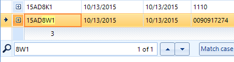

Apply Payments
This window is used in the process of applying payments to WMIS or Mas500. Here is an example window with one item

You can see we have one master record and one detail record listed.
For WMIS payments, the process would be as follows:
- Identify an unapplied Master Record
- Right Click on the item, and select Master Record
- In WMIS, click the Payment Import button

- Review & Post within WMIS.
For Mas500 payments, the process would be as follows:
- Identify an unapplied Master Record & review information available
- Enter the payment in Mas500
- In Payment Application, Right Click on the item, and select Mark Item as Posted.
The context menus available are as follows:

Here are the options available in the context menu:
- Select Master Record: This is used to copy the master record record id to the copy buffer, preparing for you to click the payment import button in wmis.
- Un-Select Master Record: This is used only if you have selected a record by mistake.
- Mark Item as Posted: Use this for a mas500 receipt. When using this method of marking, There will be no automatic data association of this receipt to a corresponding record in mas500. At this time, there is no data linking of records between the payment processing system and mas500.
- Refresh: This item simply reloads the data within the grids.
- Reset Grid Layout: The grid layout and search/filter settings are saved and restored for each user. This layout information is stored in an xml file in the user's private data. If for some reason the layout is not as expected, use this item to reset back to default.
The user can use the filtering and searching capabilities built into the grid component to
limit the number of records displayed. Here is an example where the user was searching for
the substring "8W1".

You can see the string has been highlighted in within the row containing 8W1.
You can also use filters for each column.
More Text